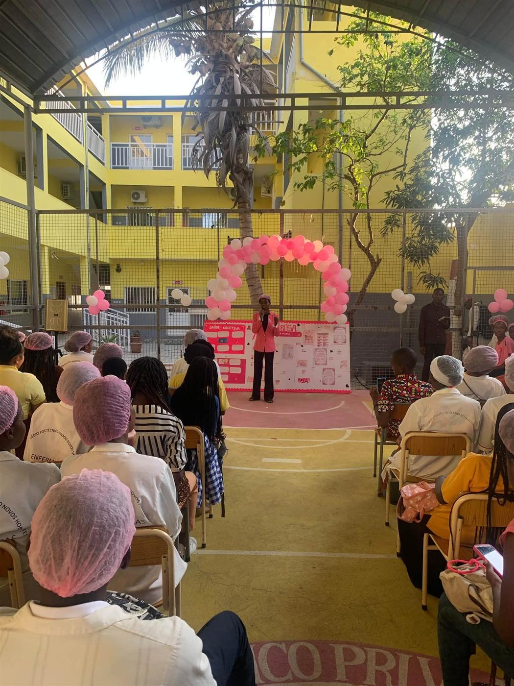

Galeria
Conhecimento que abre novos horizontes.
Laboratórios, salas de aula, pátio e momentos da vida académica no IMP NH.
A educação é um tesouro. Investe no teu futuro!
Construímos horizontes de conhecimento e formamos líderes para transformar o futuro.